2. Small Worlds and Large Worlds#
import arviz as az
import matplotlib.pyplot as plt
import numpy as np
import pandas as pd
import pymc as pm
import scipy.stats as stats
RANDOM_SEED = 8927
rng = np.random.default_rng(RANDOM_SEED)
az.style.use("arviz-darkgrid")
2.1 The garden of forking data#
2.1.1 Counting possibilities#
garden = pd.DataFrame(
{
"p1": np.repeat(0, 4),
"p2": np.repeat([1, 0], [1, 3]),
"p3": np.repeat([1, 0], [2, 2]),
"p4": np.repeat([1, 0], [3, 1]),
"p5": np.repeat(1, 4),
}
)
garden.head()
| p1 | p2 | p3 | p4 | p5 | |
|---|---|---|---|---|---|
| 0 | 0 | 1 | 1 | 1 | 1 |
| 1 | 0 | 0 | 1 | 1 | 1 |
| 2 | 0 | 0 | 0 | 1 | 1 |
| 3 | 0 | 0 | 0 | 0 | 1 |
garden["x"] = range(1, 5)
garden_melt = garden.melt(
id_vars=["x"], value_vars=["p1", "p2", "p3", "p4", "p5"], var_name="possibility"
)
garden_melt["color"] = garden_melt["value"].map(dict(zip([0, 1], ["white", "navy"])))
garden_melt.head(8)
| x | possibility | value | color | |
|---|---|---|---|---|
| 0 | 1 | p1 | 0 | white |
| 1 | 2 | p1 | 0 | white |
| 2 | 3 | p1 | 0 | white |
| 3 | 4 | p1 | 0 | white |
| 4 | 1 | p2 | 1 | navy |
| 5 | 2 | p2 | 0 | white |
| 6 | 3 | p2 | 0 | white |
| 7 | 4 | p2 | 0 | white |
_, ax = plt.subplots(figsize=(4, 3))
ax.scatter(
garden_melt["x"],
garden_melt["possibility"],
c=garden_melt["color"],
s=100,
)
ax.set_ylabel("Possibility", fontsize="xx-large")
ax.set(xticks=[], yticks=range(5), yticklabels=range(1, 6))
plt.show()
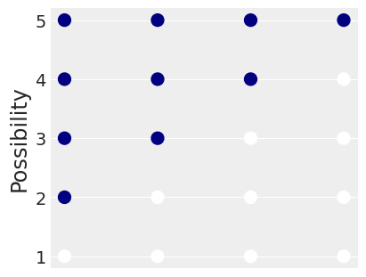
from tabulate import tabulate
df = pd.DataFrame({"draw": [1, 2, 3], "marbles": [4, 4, 4]})
df["possibilities"] = df["marbles"] ** df["draw"]
table = tabulate(
df,
headers="keys",
tablefmt="simple_outline",
colalign=["right"] * 3,
showindex=False,
)
print(table)
┌────────┬───────────┬─────────────────┐
│ draw │ marbles │ possibilities │
├────────┼───────────┼─────────────────┤
│ 1 │ 4 │ 4 │
│ 2 │ 4 │ 16 │
│ 3 │ 4 │ 64 │
└────────┴───────────┴─────────────────┘
d = pd.DataFrame(
{
"position": np.concatenate(
[
np.arange(1, 4**1 + 1) / 4**0,
np.arange(1, 4**2 + 1) / 4**1,
np.arange(1, 4**3 + 1) / 4**2,
]
),
"draw": np.repeat(np.arange(1, 4), repeats=(4**1, 4**2, 4**3)),
"fill": np.tile(
np.repeat(["navy", "white"], repeats=(1, 3)), 4**0 + 4**1 + 4**2
),
}
)
d
| position | draw | fill | |
|---|---|---|---|
| 0 | 1.0000 | 1 | navy |
| 1 | 2.0000 | 1 | white |
| 2 | 3.0000 | 1 | white |
| 3 | 4.0000 | 1 | white |
| 4 | 0.2500 | 2 | navy |
| ... | ... | ... | ... |
| 79 | 3.7500 | 3 | white |
| 80 | 3.8125 | 3 | navy |
| 81 | 3.8750 | 3 | white |
| 82 | 3.9375 | 3 | white |
| 83 | 4.0000 | 3 | white |
84 rows × 3 columns
_, ax = plt.subplots(figsize=(7, 2))
ax.scatter(
d["position"],
d["draw"],
c=d["fill"],
s=50,
edgecolors="black",
)
ax.set(
xlim=(-0.1, 4.1),
ylim=(0.8, 3.2),
xticks=np.arange(5),
yticks=[1, 2, 3],
)
plt.show()
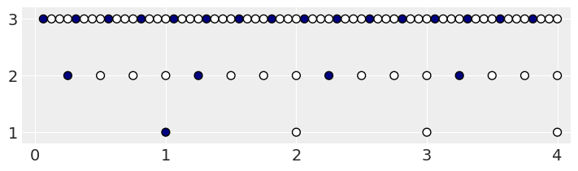
d["denominator"] = d["draw"].map(
dict(
zip(
[1, 2, 3],
[0.5 / 4**0, 0.5 / 4**1, 0.5 / 4**2],
)
)
)
d
| position | draw | fill | denominator | |
|---|---|---|---|---|
| 0 | 1.0000 | 1 | navy | 0.50000 |
| 1 | 2.0000 | 1 | white | 0.50000 |
| 2 | 3.0000 | 1 | white | 0.50000 |
| 3 | 4.0000 | 1 | white | 0.50000 |
| 4 | 0.2500 | 2 | navy | 0.12500 |
| ... | ... | ... | ... | ... |
| 79 | 3.7500 | 3 | white | 0.03125 |
| 80 | 3.8125 | 3 | navy | 0.03125 |
| 81 | 3.8750 | 3 | white | 0.03125 |
| 82 | 3.9375 | 3 | white | 0.03125 |
| 83 | 4.0000 | 3 | white | 0.03125 |
84 rows × 4 columns
lines_1 = pd.DataFrame(
{
"x": np.repeat(np.arange(1, 4**1 + 1), repeats=4) - 0.5 / 4**0,
"xend": np.arange(1, 4**2 + 1) / 4 - 0.5 / 4**1,
"y": np.repeat(1, repeats=4**2),
"yend": np.repeat(2, repeats=4**2),
}
)
lines_1
| x | xend | y | yend | |
|---|---|---|---|---|
| 0 | 0.5 | 0.125 | 1 | 2 |
| 1 | 0.5 | 0.375 | 1 | 2 |
| 2 | 0.5 | 0.625 | 1 | 2 |
| 3 | 0.5 | 0.875 | 1 | 2 |
| 4 | 1.5 | 1.125 | 1 | 2 |
| 5 | 1.5 | 1.375 | 1 | 2 |
| 6 | 1.5 | 1.625 | 1 | 2 |
| 7 | 1.5 | 1.875 | 1 | 2 |
| 8 | 2.5 | 2.125 | 1 | 2 |
| 9 | 2.5 | 2.375 | 1 | 2 |
| 10 | 2.5 | 2.625 | 1 | 2 |
| 11 | 2.5 | 2.875 | 1 | 2 |
| 12 | 3.5 | 3.125 | 1 | 2 |
| 13 | 3.5 | 3.375 | 1 | 2 |
| 14 | 3.5 | 3.625 | 1 | 2 |
| 15 | 3.5 | 3.875 | 1 | 2 |
lines_2 = pd.DataFrame(
{
"x": np.repeat(np.arange(1, 4**2 + 1) / 4, repeats=4) - 0.5 / 4**1,
"xend": np.arange(1, 4**3 + 1) / 4**2 - 0.5 / 4**2,
"y": np.repeat(2, repeats=4**3),
"yend": np.repeat(3, repeats=4**3),
}
)
lines_2
| x | xend | y | yend | |
|---|---|---|---|---|
| 0 | 0.125 | 0.03125 | 2 | 3 |
| 1 | 0.125 | 0.09375 | 2 | 3 |
| 2 | 0.125 | 0.15625 | 2 | 3 |
| 3 | 0.125 | 0.21875 | 2 | 3 |
| 4 | 0.375 | 0.28125 | 2 | 3 |
| ... | ... | ... | ... | ... |
| 59 | 3.625 | 3.71875 | 2 | 3 |
| 60 | 3.875 | 3.78125 | 2 | 3 |
| 61 | 3.875 | 3.84375 | 2 | 3 |
| 62 | 3.875 | 3.90625 | 2 | 3 |
| 63 | 3.875 | 3.96875 | 2 | 3 |
64 rows × 4 columns
d["position"] = d["position"] - d["denominator"]
d
| position | draw | fill | denominator | |
|---|---|---|---|---|
| 0 | 0.50000 | 1 | navy | 0.50000 |
| 1 | 1.50000 | 1 | white | 0.50000 |
| 2 | 2.50000 | 1 | white | 0.50000 |
| 3 | 3.50000 | 1 | white | 0.50000 |
| 4 | 0.12500 | 2 | navy | 0.12500 |
| ... | ... | ... | ... | ... |
| 79 | 3.71875 | 3 | white | 0.03125 |
| 80 | 3.78125 | 3 | navy | 0.03125 |
| 81 | 3.84375 | 3 | white | 0.03125 |
| 82 | 3.90625 | 3 | white | 0.03125 |
| 83 | 3.96875 | 3 | white | 0.03125 |
84 rows × 4 columns
from matplotlib.lines import Line2D
_, ax = plt.subplots(figsize=(7, 2))
polar_factor = np.pi / 2
for _, row in lines_1.iterrows():
ax.add_line(
Line2D(
[row["x"], row["xend"]],
[row["y"], row["yend"]],
color="black",
linewidth=1 / 2,
)
)
for _, row in lines_2.iterrows():
ax.add_line(
Line2D(
[row["x"], row["xend"]],
[row["y"], row["yend"]],
color="black",
linewidth=1 / 2,
)
)
ax.scatter(
d["position"],
d["draw"],
c=d["fill"],
edgecolors="black",
s=100,
)
ax.set(
xlim=(-0.05, 4.05),
ylim=(0.85, 3.25),
xticks=np.arange(5),
yticks=[1, 2, 3],
)
ax.set(xlabel="position", ylabel="draw")
plt.show()
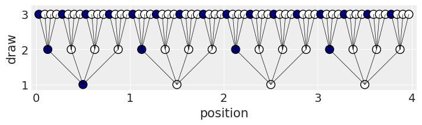
from matplotlib.lines import Line2D
_, ax = plt.subplots(subplot_kw={"projection": "polar"})
polar_factor = np.pi / 2
for _, row in lines_1.iterrows():
ax.add_line(
Line2D(
[row["x"] * polar_factor, row["xend"] * polar_factor],
[row["y"] * polar_factor, row["yend"] * polar_factor],
color="black",
linewidth=1 / 2,
)
)
for _, row in lines_2.iterrows():
ax.add_line(
Line2D(
[row["x"] * polar_factor, row["xend"] * polar_factor],
[row["y"] * polar_factor, row["yend"] * polar_factor],
color="black",
linewidth=1 / 2,
)
)
ax.scatter(
d["position"] * polar_factor,
d["draw"] * polar_factor,
c=d["fill"],
edgecolors="black",
s=100,
)
ax.xaxis.grid(False)
ax.yaxis.grid(False)
ax.set(
xticks=np.arange(4) * polar_factor,
xticklabels=[],
yticks=[],
theta_offset=polar_factor / 2,
)
plt.show()
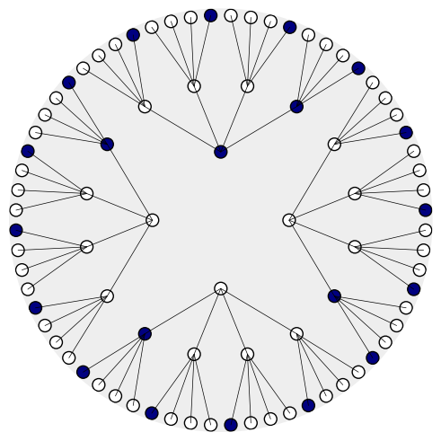
# create the data
t = pd.DataFrame(
{
"d1": ["w", "b", "b", "b", "b"],
"d2": ["w", "w", "b", "b", "b"],
"d3": ["w", "w", "w", "b", "b"],
"d4": ["w", "w", "w", "w", "b"],
}
)
# apply the functions and calculate the product
t["blue1"] = np.sum(t.values == "b", axis=1)
t["white"] = np.sum(t.values == "w", axis=1)
t["blue2"] = np.sum(t.values == "b", axis=1)
t["product"] = t["blue1"] * t["white"] * t["blue2"]
t
| d1 | d2 | d3 | d4 | blue1 | white | blue2 | product | |
|---|---|---|---|---|---|---|---|---|
| 0 | w | w | w | w | 0 | 4 | 0 | 0 |
| 1 | b | w | w | w | 1 | 3 | 1 | 3 |
| 2 | b | b | w | w | 2 | 2 | 2 | 8 |
| 3 | b | b | b | w | 3 | 1 | 3 | 9 |
| 4 | b | b | b | b | 4 | 0 | 4 | 0 |
t1 = pd.DataFrame(
{
"Conjecture": "["
+ t["d1"]
+ " "
+ t["d2"]
+ " "
+ t["d3"]
+ " "
+ t["d4"]
+ "]",
"Ways to produce [w b w]": t["blue1"].astype(str)
+ " * "
+ t["white"].astype(str)
+ " * "
+ t["blue2"].astype(str)
+ " = "
+ t["product"].astype(str),
}
)
t1.style.set_properties(**{"text-align": "center", "font-family": "Andale Mono"})
| Conjecture | Ways to produce [w b w] | |
|---|---|---|
| 0 | [w w w w] | 0 * 4 * 0 = 0 |
| 1 | [b w w w] | 1 * 3 * 1 = 3 |
| 2 | [b b w w] | 2 * 2 * 2 = 8 |
| 3 | [b b b w] | 3 * 1 * 3 = 9 |
| 4 | [b b b b] | 4 * 0 * 4 = 0 |
2.1.2 Combining other information#
t2 = pd.DataFrame(
{
"Conjecture": t1["Conjecture"],
"Ways to produce [b]": t["blue1"],
"Prior counts": t["product"],
},
)
t2["New count"] = (
t2["Ways to produce [b]"].astype(str)
+ " * "
+ t2["Prior counts"].astype(str)
+ " = "
+ (t2["Ways to produce [b]"] * t2["Prior counts"]).astype(str)
)
t2.style.set_properties(**{"text-align": "center", "font-family": "Andale Mono"})
| Conjecture | Ways to produce [b] | Prior counts | New count | |
|---|---|---|---|---|
| 0 | [w w w w] | 0 | 0 | 0 * 0 = 0 |
| 1 | [b w w w] | 1 | 3 | 1 * 3 = 3 |
| 2 | [b b w w] | 2 | 8 | 2 * 8 = 16 |
| 3 | [b b b w] | 3 | 9 | 3 * 9 = 27 |
| 4 | [b b b b] | 4 | 0 | 4 * 0 = 0 |
t3 = pd.DataFrame(
{
"Conjecture": "["
+ t["d1"]
+ " "
+ t["d2"]
+ " "
+ t["d3"]
+ " "
+ t["d4"]
+ "]",
"Prior counts": t["blue1"] * t["product"],
"Factory count": np.r_[np.array([0]), np.arange(3, -1, -1)],
},
)
t3["New count"] = (
t3["Prior counts"].astype(str)
+ " * "
+ t3["Factory count"].astype(str)
+ " = "
+ (t3["Prior counts"] * t3["Factory count"]).astype(str)
)
t3.style.set_properties(**{"text-align": "center", "font-family": "Andale Mono"})
| Conjecture | Prior counts | Factory count | New count | |
|---|---|---|---|---|
| 0 | [w w w w] | 0 | 0 | 0 * 0 = 0 |
| 1 | [b w w w] | 3 | 3 | 3 * 3 = 9 |
| 2 | [b b w w] | 16 | 2 | 16 * 2 = 32 |
| 3 | [b b b w] | 27 | 1 | 27 * 1 = 27 |
| 4 | [b b b b] | 0 | 0 | 0 * 0 = 0 |
2.1.3 From counts to probability#
Code 2.1
ways = np.array(t["product"])
ways / ways.sum()
array([0. , 0.15, 0.4 , 0.45, 0. ])
t4 = pd.DataFrame(
{
"Possible composition": "["
+ t["d1"]
+ " "
+ t["d2"]
+ " "
+ t["d3"]
+ " "
+ t["d4"]
+ "]",
"*p*": t["blue1"] / 4,
"Ways to produce data": ways,
"Plausibility": ways / ways.sum(),
},
)
t4.style.set_properties(
**{"text-align": "center", "font-family": "Andale Mono"}
).format(precision=2)
| Possible composition | *p* | Ways to produce data | Plausibility | |
|---|---|---|---|---|
| 0 | [w w w w] | 0.00 | 0 | 0.00 |
| 1 | [b w w w] | 0.25 | 3 | 0.15 |
| 2 | [b b w w] | 0.50 | 8 | 0.40 |
| 3 | [b b b w] | 0.75 | 9 | 0.45 |
| 4 | [b b b b] | 1.00 | 0 | 0.00 |
2.2 Building a model#
2.2.1 A data story#
2.2.2 Bayesian updating#
toss = np.array(["w", "l", "w", "w", "w", "l", "w", "l", "w"])
n_trials = np.arange(1, 10)
n_success = np.cumsum(toss == "w")
df = pd.DataFrame({"toss": toss, "n_trials": n_trials, "n_success": n_success})
df
| toss | n_trials | n_success | |
|---|---|---|---|
| 0 | w | 1 | 1 |
| 1 | l | 2 | 1 |
| 2 | w | 3 | 2 |
| 3 | w | 4 | 3 |
| 4 | w | 5 | 4 |
| 5 | l | 6 | 4 |
| 6 | w | 7 | 5 |
| 7 | l | 8 | 5 |
| 8 | w | 9 | 6 |
import itertools
sequence_length = 50
# Create a list of values for p_water
p_water_values = np.linspace(0, 1, sequence_length)
# Create a list of all possible combinations of p_water and n_trials
expanded_grid = pd.DataFrame(
list(itertools.product(n_trials, p_water_values)), columns=["n_trials", "p_water"]
)
# Merge the expanded grid with the original data frame
df_final = pd.merge(df, expanded_grid, on="n_trials")
df_final
| toss | n_trials | n_success | p_water | |
|---|---|---|---|---|
| 0 | w | 1 | 1 | 0.000000 |
| 1 | w | 1 | 1 | 0.020408 |
| 2 | w | 1 | 1 | 0.040816 |
| 3 | w | 1 | 1 | 0.061224 |
| 4 | w | 1 | 1 | 0.081633 |
| ... | ... | ... | ... | ... |
| 445 | w | 9 | 6 | 0.918367 |
| 446 | w | 9 | 6 | 0.938776 |
| 447 | w | 9 | 6 | 0.959184 |
| 448 | w | 9 | 6 | 0.979592 |
| 449 | w | 9 | 6 | 1.000000 |
450 rows × 4 columns
df_final["lagged_n_trials"] = df_final.groupby("p_water")["n_trials"].shift(1)
df_final["lagged_n_success"] = df_final.groupby("p_water")["n_success"].shift(1)
df_final["prior"] = np.where(
df_final["n_trials"] == 1,
0.5,
stats.binom.pmf(
df_final["lagged_n_success"],
df_final["lagged_n_trials"],
df_final["p_water"],
),
)
df_final["likelihood"] = stats.binom.pmf(
df_final["n_success"],
df_final["n_trials"],
df_final["p_water"],
)
df_final["prior"] = df_final.groupby("n_trials", group_keys=False)["prior"].apply(
lambda x: x / x.sum()
)
df_final["likelihood"] = df_final.groupby("n_trials", group_keys=False)[
"likelihood"
].apply(lambda x: x / x.sum())
df_final["strip"] = "n = " + df_final["n_trials"].astype(str)
df_final
| toss | n_trials | n_success | p_water | lagged_n_trials | lagged_n_success | prior | likelihood | strip | |
|---|---|---|---|---|---|---|---|---|---|
| 0 | w | 1 | 1 | 0.000000 | NaN | NaN | 0.020000 | 0.000000 | n = 1 |
| 1 | w | 1 | 1 | 0.020408 | NaN | NaN | 0.020000 | 0.000816 | n = 1 |
| 2 | w | 1 | 1 | 0.040816 | NaN | NaN | 0.020000 | 0.001633 | n = 1 |
| 3 | w | 1 | 1 | 0.061224 | NaN | NaN | 0.020000 | 0.002449 | n = 1 |
| 4 | w | 1 | 1 | 0.081633 | NaN | NaN | 0.020000 | 0.003265 | n = 1 |
| ... | ... | ... | ... | ... | ... | ... | ... | ... | ... |
| 445 | w | 9 | 6 | 0.918367 | 8.0 | 5.0 | 0.003655 | 0.005595 | n = 9 |
| 446 | w | 9 | 6 | 0.938776 | 8.0 | 5.0 | 0.001721 | 0.002693 | n = 9 |
| 447 | w | 9 | 6 | 0.959184 | 8.0 | 5.0 | 0.000568 | 0.000908 | n = 9 |
| 448 | w | 9 | 6 | 0.979592 | 8.0 | 5.0 | 0.000079 | 0.000129 | n = 9 |
| 449 | w | 9 | 6 | 1.000000 | 8.0 | 5.0 | 0.000000 | 0.000000 | n = 9 |
450 rows × 9 columns
_, axes = plt.subplots(3, 3, figsize=(9, 6), sharex=True, sharey=True)
for (ix, group), ax in zip(df_final.groupby("strip"), axes.flatten()):
ax.plot(group["p_water"], group["prior"], linestyle="--", label="prior")
ax.plot(group["p_water"], group["likelihood"], label="likelihood")
ax.set(
title=group["strip"].unique()[0],
xticks=[0, 0.5, 1.0],
yticks=[],
)
ax.grid(0)
axes[0, 0].legend(fontsize="medium")
axes[1, 0].set_ylabel("Plausibility")
axes[2, 1].set_xlabel("Proportion of Water")
plt.suptitle("Bayesian updating of water proportion", fontsize="x-large")
plt.show()
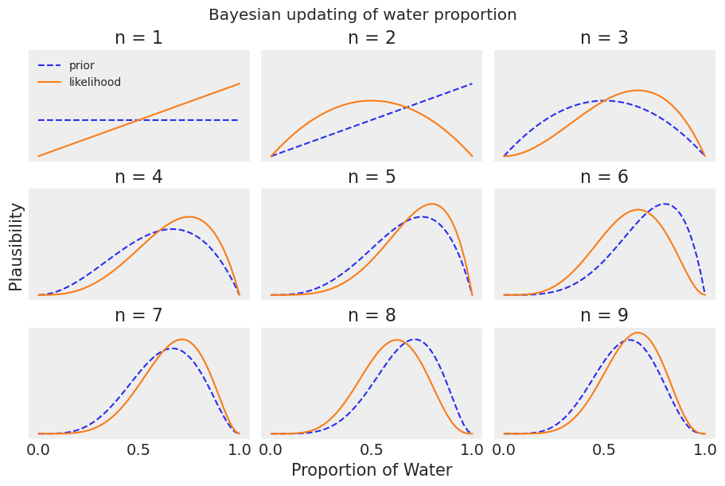
2.2.3 Evaluate#
2.3 Components of the model#
2.3.1 Variables#
2.3.2 Definitions.#
2.3.2.1 Observed variables#
Code 2.2
The probability of observing six W’s in nine tosses — below a value of \(p=0.5\).
stats.binom.pmf(6, n=9, p=0.5)
0.16406250000000003
df2 = pd.DataFrame({"prob": np.arange(0, 1.01, 0.01)})
_, ax = plt.subplots(figsize=(4, 3))
ax.plot(df2["prob"], stats.binom.pmf(6, 9, df2["prob"]))
ax.set(xlabel="Probability", ylabel="Binomial Likelihood", yticks=[0, 0.1, 0.2, 0.3])
ax.grid(False)
plt.show()
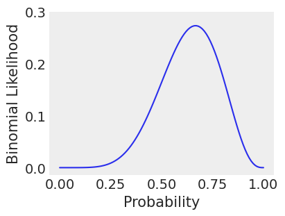
2.3.2.2 Unobserved variables#
2.3.2.3 Overthinking: Prior as a probability distribution#
df3 = pd.DataFrame({"a": [0] * 5, "b": [1, 1.5, 2, 3, 9]})
parameter_space = np.linspace(start=0, stop=9, num=500)
df3 = pd.DataFrame(
list(itertools.product(df3["a"], df3["b"], parameter_space)),
columns=["a", "b", "parameter_space"],
)
df3["prob"] = stats.uniform.pdf(
df3["parameter_space"], loc=df3["a"], scale=df3["b"] - df3["a"]
)
df3
| a | b | parameter_space | prob | |
|---|---|---|---|---|
| 0 | 0 | 1.0 | 0.000000 | 1.000000 |
| 1 | 0 | 1.0 | 0.018036 | 1.000000 |
| 2 | 0 | 1.0 | 0.036072 | 1.000000 |
| 3 | 0 | 1.0 | 0.054108 | 1.000000 |
| 4 | 0 | 1.0 | 0.072144 | 1.000000 |
| ... | ... | ... | ... | ... |
| 12495 | 0 | 9.0 | 8.927856 | 0.111111 |
| 12496 | 0 | 9.0 | 8.945892 | 0.111111 |
| 12497 | 0 | 9.0 | 8.963928 | 0.111111 |
| 12498 | 0 | 9.0 | 8.981964 | 0.111111 |
| 12499 | 0 | 9.0 | 9.000000 | 0.111111 |
12500 rows × 4 columns
_, axes = plt.subplots(1, 5, figsize=(9, 2))
for (b, group), ax in zip(df3.groupby("b"), axes.flatten()):
ax.bar(group["parameter_space"], group["prob"])
ax.set(
title=f"b = {b}",
xticks=[0, 1, 2, 3, 9],
yticks=[0, 1 / 9, 1 / 3, 1 / 2, 2 / 3, 1],
yticklabels=["0", "1/9", "1/3", "1/2", "2/3", "1"],
)
ax.grid(0)
plt.show()
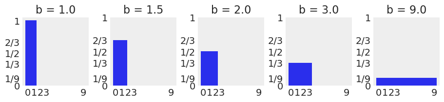
df4 = pd.DataFrame({"parameter_space": np.linspace(0, 1, 50)})
df4["prob"] = stats.beta.pdf(df4["parameter_space"], 1, 1)
_, ax = plt.subplots(figsize=(4, 3))
ax.fill_between(df4["parameter_space"], df4["prob"])
ax.set(
ylim=[0, 2],
ylabel="density",
title=r"Beta distribution, $α=1, β=1$",
)
ax.grid(0)
plt.show()
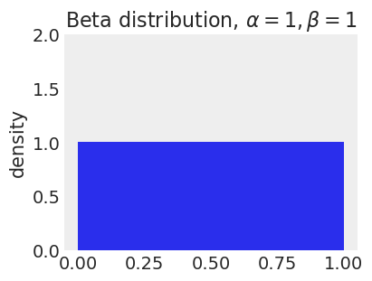
2.3.2.4 Rethinking: Datum or parameter?#
2.3.3 A model is born#
2.4 Making the model go#
2.4.1 Bayes’ theorem#
sequence_length = 1000
col_values = [["flat", "stepped", "LaPlace"], np.linspace(0, 1, sequence_length)]
grid = [*itertools.product(*col_values)]
df5 = pd.DataFrame(grid, columns=["row", "probability"])
df5
| row | probability | |
|---|---|---|
| 0 | flat | 0.000000 |
| 1 | flat | 0.001001 |
| 2 | flat | 0.002002 |
| 3 | flat | 0.003003 |
| 4 | flat | 0.004004 |
| ... | ... | ... |
| 2995 | LaPlace | 0.995996 |
| 2996 | LaPlace | 0.996997 |
| 2997 | LaPlace | 0.997998 |
| 2998 | LaPlace | 0.998999 |
| 2999 | LaPlace | 1.000000 |
3000 rows × 2 columns
df5["prior"] = np.where(
df5["row"] == "flat",
1,
np.where(
df5["row"] == "stepped",
np.repeat([0, 1], sequence_length / 2 * 3),
np.exp(-abs(df5["probability"] - 0.5) / 0.25) / (2 * 0.25),
),
)
df5["likelihood"] = stats.binom.pmf(6, 9, df5["probability"])
df5
| row | probability | prior | likelihood | |
|---|---|---|---|---|
| 0 | flat | 0.000000 | 1.000000 | 0.000000e+00 |
| 1 | flat | 0.001001 | 1.000000 | 8.425225e-17 |
| 2 | flat | 0.002002 | 1.000000 | 5.375951e-15 |
| 3 | flat | 0.003003 | 1.000000 | 6.105137e-14 |
| 4 | flat | 0.004004 | 1.000000 | 3.419945e-13 |
| ... | ... | ... | ... | ... |
| 2995 | LaPlace | 0.995996 | 0.275041 | 5.263909e-06 |
| 2996 | LaPlace | 0.996997 | 0.273941 | 2.234136e-06 |
| 2997 | LaPlace | 0.997998 | 0.272847 | 6.659641e-07 |
| 2998 | LaPlace | 0.998999 | 0.271757 | 8.374775e-08 |
| 2999 | LaPlace | 1.000000 | 0.270671 | 0.000000e+00 |
3000 rows × 4 columns
df5_final = (
df5.groupby("row", group_keys=False)
.apply(
lambda x: x.assign(
posterior=x["prior"] * x["likelihood"] / sum(x["prior"] * x["likelihood"])
)
)
.melt(
id_vars=["row", "probability"],
value_vars=["prior", "likelihood", "posterior"],
var_name="name",
value_name="value",
)
.reset_index(drop=True)
)
df5_final["row"] = pd.Categorical(
df5_final["row"], categories=["flat", "stepped", "LaPlace"]
)
df5_final["name"] = pd.Categorical(
df5_final["name"], categories=["prior", "likelihood", "posterior"]
)
df5_final.sort_values(["row", "name"])
| row | probability | name | value | |
|---|---|---|---|---|
| 0 | flat | 0.000000 | prior | 1.000000e+00 |
| 1 | flat | 0.001001 | prior | 1.000000e+00 |
| 2 | flat | 0.002002 | prior | 1.000000e+00 |
| 3 | flat | 0.003003 | prior | 1.000000e+00 |
| 4 | flat | 0.004004 | prior | 1.000000e+00 |
| ... | ... | ... | ... | ... |
| 8995 | LaPlace | 0.995996 | posterior | 1.286483e-08 |
| 8996 | LaPlace | 0.996997 | posterior | 5.438340e-09 |
| 8997 | LaPlace | 0.997998 | posterior | 1.614614e-09 |
| 8998 | LaPlace | 0.998999 | posterior | 2.022330e-10 |
| 8999 | LaPlace | 1.000000 | posterior | 0.000000e+00 |
9000 rows × 4 columns
for row in df5_final.row.unique():
_, axes = plt.subplots(1, 3, figsize=(8, 2))
for name, ax in zip(df5_final.name.unique(), axes.flatten()):
df_i = df5_final.query(f"row == '{row}'").query(f"name == '{name}'")
ax.plot(df_i["probability"], df_i["value"])
if row == "flat":
ax.set(title=f"{name}")
axes[0].set(ylabel=f"{row}")
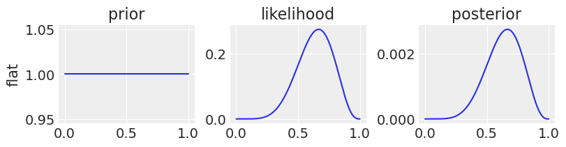
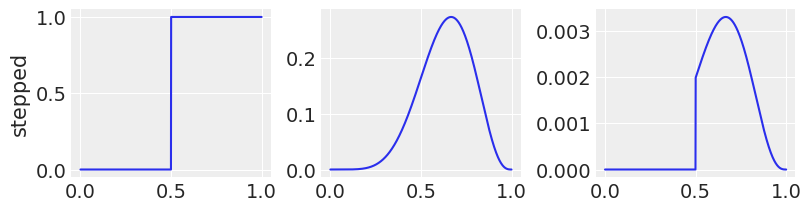
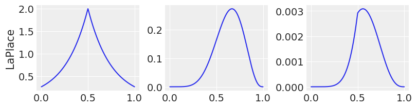
2.4.2 Motors#
2.4.3 Grid approximation#
Code 2.3 and 2.5
Computing the posterior using a grid approximation.
In the book, the following code is not inside a function, but this way it is easier to play with different parameters.
def uniform_prior(n_samples):
return np.ones(n_samples)
def truncated_prior(n_samples, trunc_point=0.5):
return (np.linspace(0, 1, n_samples) >= trunc_point).astype(int)
def double_exp_prior(n_samples):
return np.exp(-5 * abs(np.linspace(0, 1, n_samples) - 0.5))
def grid_approximation(prior_func, n_samples, n_success=6, n_trials=9):
# define p_grid, prior
p_grid = np.linspace(0, 1, n_samples)
prior = prior_func(n_samples)
# compute likelihood, posterior
likelihood = stats.binom.pmf(n_success, n_trials, p_grid)
unstd_posterior = likelihood * prior
posterior = unstd_posterior / np.sum(unstd_posterior)
return pd.DataFrame(
{
"p_grid": p_grid,
"prior": prior,
"likelihood": likelihood,
"unstd_posterior": unstd_posterior,
"posterior": posterior,
}
)
grid_approximation(uniform_prior, 20)
| p_grid | prior | likelihood | unstd_posterior | posterior | |
|---|---|---|---|---|---|
| 0 | 0.000000 | 1.0 | 0.000000 | 0.000000 | 0.000000e+00 |
| 1 | 0.052632 | 1.0 | 0.000002 | 0.000002 | 7.989837e-07 |
| 2 | 0.105263 | 1.0 | 0.000082 | 0.000082 | 4.307717e-05 |
| 3 | 0.157895 | 1.0 | 0.000777 | 0.000777 | 4.090797e-04 |
| 4 | 0.210526 | 1.0 | 0.003599 | 0.003599 | 1.893887e-03 |
| 5 | 0.263158 | 1.0 | 0.011161 | 0.011161 | 5.873873e-03 |
| 6 | 0.315789 | 1.0 | 0.026683 | 0.026683 | 1.404294e-02 |
| 7 | 0.368421 | 1.0 | 0.052921 | 0.052921 | 2.785174e-02 |
| 8 | 0.421053 | 1.0 | 0.090827 | 0.090827 | 4.780115e-02 |
| 9 | 0.473684 | 1.0 | 0.138341 | 0.138341 | 7.280739e-02 |
| 10 | 0.526316 | 1.0 | 0.189769 | 0.189769 | 9.987296e-02 |
| 11 | 0.578947 | 1.0 | 0.236115 | 0.236115 | 1.242643e-01 |
| 12 | 0.631579 | 1.0 | 0.266611 | 0.266611 | 1.403143e-01 |
| 13 | 0.684211 | 1.0 | 0.271401 | 0.271401 | 1.428349e-01 |
| 14 | 0.736842 | 1.0 | 0.245005 | 0.245005 | 1.289433e-01 |
| 15 | 0.789474 | 1.0 | 0.189769 | 0.189769 | 9.987296e-02 |
| 16 | 0.842105 | 1.0 | 0.117918 | 0.117918 | 6.205890e-02 |
| 17 | 0.894737 | 1.0 | 0.050267 | 0.050267 | 2.645477e-02 |
| 18 | 0.947368 | 1.0 | 0.008854 | 0.008854 | 4.659673e-03 |
| 19 | 1.000000 | 1.0 | 0.000000 | 0.000000 | 0.000000e+00 |
prior_funcs = [uniform_prior, truncated_prior, double_exp_prior]
n_samples = [5, 20, 50]
n_success = 6
n_trials = 9
for prior_func in prior_funcs:
_, axes = plt.subplots(1, 3, figsize=(8, 3), constrained_layout=True)
for sample, ax in zip(n_samples, axes.flatten()):
df_i = grid_approximation(prior_func, sample, n_success, n_trials)
ax.plot(df_i["p_grid"], df_i["posterior"], "bo-")
ax.set_title(
f"{sample} points\nsuccesses = {n_success}, tosses = {n_trials}",
fontsize="medium",
)
ax.set_xlabel("probability of water")
axes[0].set_ylabel(f"posterior of {prior_func.__name__.replace('_', ' ')}")
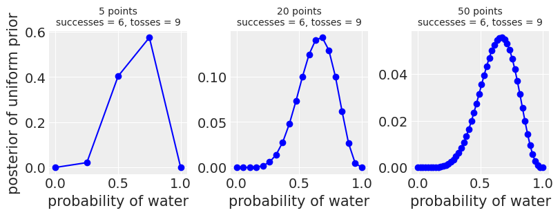
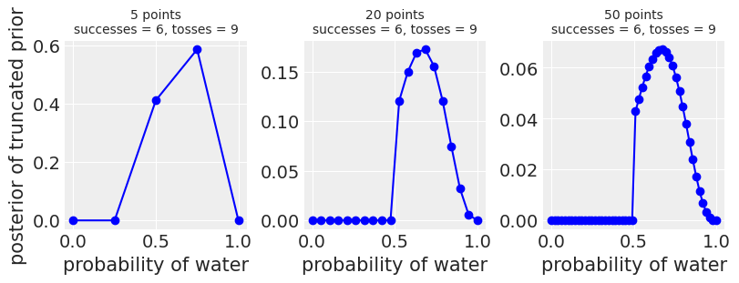
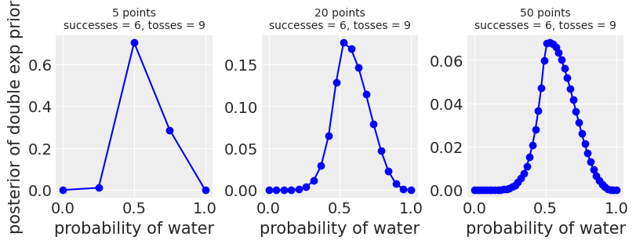
2.4.4 Quadratic approximation#
the following code is buggy as mentioned in the issues
Code 2.6
Computing the posterior using the quadratic approximation (quad).
data = np.repeat((0, 1), (3, 6))
with pm.Model() as normal_approximation:
# define prior
p = pm.Uniform("p", 0, 1)
# define likelihood
w = pm.Binomial("w", n=len(data), p=p, observed=data.sum())
# compute posterior
mean_q = pm.find_MAP()
p_value = normal_approximation.rvs_to_values[p]
p_value.name = p.name
std_q = ((1 / pm.find_hessian(mean_q, vars=[p])) ** 0.5)[0]
# display summary of quadratic approximation
print(f"Mean, SD\np {mean_q['p']:.4}, {std_q[0]:.4}")
# Compute the 89% percentile interval
norm = stats.norm(mean_q, std_q)
prob = 0.89
z = stats.norm.ppf([(1 - prob) / 2, (1 + prob) / 2])
pi = mean_q["p"] + std_q * z
print("5.5%, 94.5% \n{:.2}, {:.2}".format(pi[0], pi[1]))
Mean, SD
p 0.6667, 0.6368
5.5%, 94.5%
-0.35, 1.7
Code 2.7
x = np.linspace(0, 1, 100)
w, n = [6, 12, 24], [9, 18, 36]
_, axes = plt.subplots(1, 3, figsize=(9, 4), constrained_layout=True)
for ps, ax in zip(zip(w, n), axes.flatten()):
data = np.repeat((0, 1), (ps[1] - ps[0], ps[0]))
with pm.Model() as normal_approximation:
p = pm.Uniform("p", 0, 1) # uniform priors
w = pm.Binomial(
"w", n=len(data), p=p, observed=data.sum()
) # binomial likelihood
mean_q = pm.find_MAP()
p_value = normal_approximation.rvs_to_values[p]
p_value.tag.transform = None
p_value.name = p.name
std_q = ((1 / pm.find_hessian(mean_q, vars=[p])) ** 0.5)[0]
ax.plot(x, stats.beta.pdf(x, ps[0] + 1, ps[1] - ps[0] + 1), label="True posterior")
ax.plot(x, stats.norm.pdf(x, mean_q["p"], std_q), label="Quadratic approximation")
ax.set_xlabel("probability of water")
ax.set_title(f"$n={ps[1]}$")
axes[0].set_ylabel("density")
axes[0].legend(loc="upper left", fontsize="medium")
<matplotlib.legend.Legend at 0x17f4617d0>
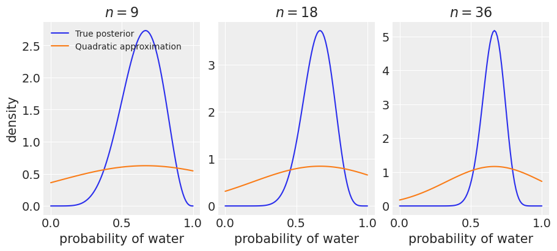
2.4.4.1 Rethinking: Maximum likelihood estimation#
2.4.5 Markov chain Monte Carlo#
Code 2.8
n_samples = 1000
ps = np.zeros(n_samples)
ps[0] = 0.5
W, L = 6, 3
for i in range(1, n_samples):
p_new = stats.norm(ps[i - 1], 0.1).rvs(1)
if p_new < 0:
p_new = -p_new
if p_new > 1:
p_new = 2 - p_new
q0 = stats.binom.pmf(W, n=W + L, p=ps[i - 1])
q1 = stats.binom.pmf(W, n=W + L, p=p_new)
ps[i] = p_new if stats.uniform.rvs(0, 1) < q1 / q0 else ps[i - 1]
_, ax = plt.subplots(figsize=(4, 3))
az.plot_kde(ps, label="Metropolis approximation", ax=ax)
x = np.linspace(0, 1, 100)
ax.plot(x, stats.beta.pdf(x, W + 1, L + 1), "C1", label="True posterior")
ax.legend(loc="upper left", fontsize="medium")
<matplotlib.legend.Legend at 0x17c405090>
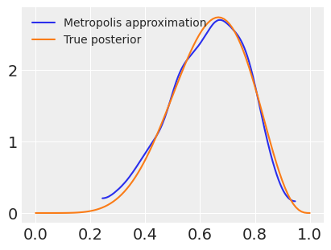